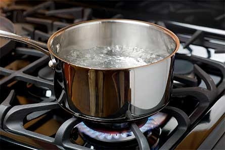
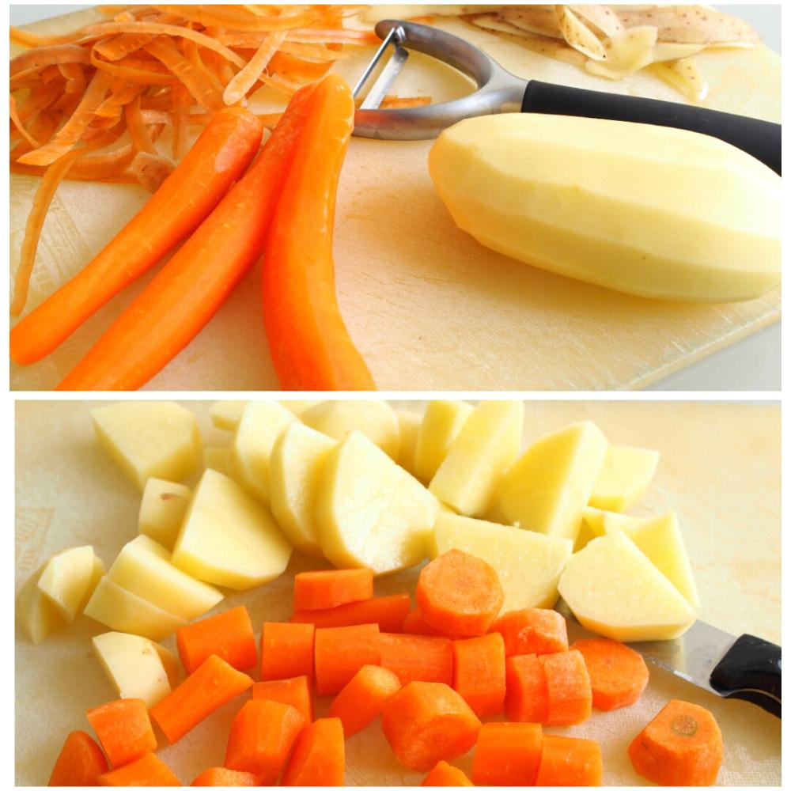

Primer Plato
Sopa de Macaco
Indice
Ingredientes
- Macaco
- Patatas
- Perejil
- Zanahorias
- Maiz
Paso a paso
- Primero que todo, para preparar una sopa de macaco hay que encontrar al macaco ideal para la sopa.
- Luego de haber encontrado a tu macaco ideal debes empezar a cocinarlo, para esto debes quitarle la piel al macaco y ponerlo en una olla con aguahirviendo a no mas de 150 grados durante 20 minutos.

- Mientras el macaco se esta cocinando deben empezar a preparar las patatas, el perejil, el maiz y las zanahorias (la preparacion es a eleccion de ustedes)

- despues de tener todo listo agregan los condimentos a su sopa de macaco, deber revolver muy bien

- Dejar enfriar por 10 minutos y listo!, tendran una deliciosa sopa de macaco lista para degustarse!
Resultado final